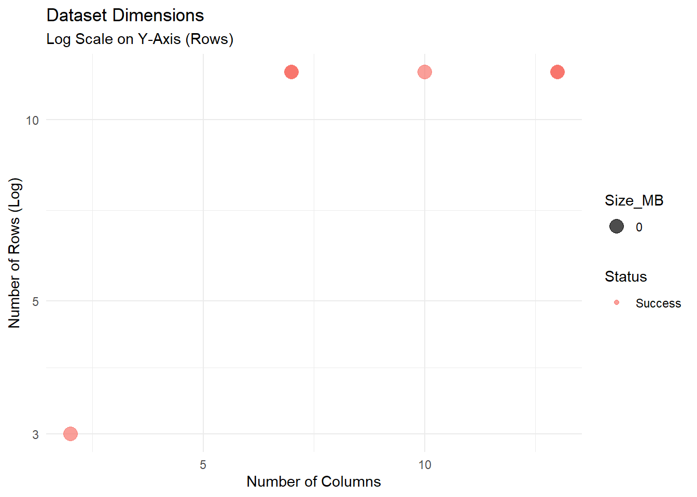

Code
# install.packages(c("tidyverse", "rstudioapi", "skimr", "DT", "tools"))This notebook provides a comprehensive toolkit for inspecting tabular data stored in Comma Separated Values (CSV) format. // Ce cahier de travail fournit une boîte à outils complète pour analyser les données tabulaires stockées au format CSV (valeurs séparées par des virgules).
Validate the integrity and “tidiness” of tabular data. Our objective is to ensure files follow Tidy Data principles (Wickham 2014), use universal encoding (UTF-8), and are free from structural defects that hinder automated processing. // Vérifier l’intégrité et la « propreté » des données tabulaires. Notre objectif est de s’assurer que les fichiers respectent les principes de Tidy Data (Wickham 2014), utilisent un encodage universel (UTF-8) et ne présentent aucun défaut structurel susceptible d’entraver leur traitement automatisé.
The simplicity of CSV is its greatest risk. Lack of strict schema enforcement often leads to “ragged” rows, mixed data types in single columns, and encoding corruption that can render datasets contextually unusable (Broman and Woo 2018). // La simplicité du format CSV constitue son plus grand risque. L’absence d’application stricte d’un schéma conduit souvent à des lignes « irrégulières », à des types de données mélangés au sein d’une même colonne et à des problèmes d’encodage qui peuvent rendre les ensembles de données inutilisables dans certains contextes (Broman and Woo 2018).
Curation Objectives:
//
Objectifs de la curation :
We utilize tidyverse for data manipulation, skimr for detailed profiling, and DT for interactive result exploration.
//
Nous utilisons tidyverse pour la manipulation des données, skimr pour l’analyse détaillée et DT pour l’exploration interactive des résultats.
The following R packages are required. If you don’t have these packages, uncomment this code and run it once in your R console:
//
Les packages R suivants sont requis. Si vous ne disposez pas de ces packages, décommentez ce code et exécutez-le une fois dans votre console R :
# install.packages(c("tidyverse", "rstudioapi", "skimr", "DT", "tools"))library(tidyverse)
library(skimr)
library(DT)
library(tools)
library(rstudioapi)First, we select the directory to analyze and find .csv files within it.
//
Tout d’abord, nous sélectionnons le répertoire à analyser afin d’y rechercher les fichiers .csv.
# 1. Attempt interactive selection (Windows/RStudio)
if (interactive() && .Platform$OS.type == "windows") {
selected_dir <- rstudioapi::selectDirectory(caption = "Select Data Directory")
} else {
selected_dir <- NULL
}
# 2. Fallback to parameter
target_dir <- if (!is.null(selected_dir)) selected_dir else params$target_dir
message("Analyzing directory: ", target_dir)We locate all .csv files and extract basic filesystem metadata (size, modification date).
//
Nous localisons tous les fichiers .csv et extrayons les métadonnées de base du système de fichiers (taille, date de modification).
csv_files <- list.files(
path = target_dir,
pattern = "\\.csv$",
recursive = TRUE,
full.names = TRUE,
ignore.case = TRUE
)
message("Found ", length(csv_files), " CSV files.")This section performs a high-level scan to detect structural defects that might prevent the file from being opened or interpreted correctly (Broman and Woo 2018).
Metrics Calculated:
Encoding: Non-UTF-8 encodings (like Latin-1 or Windows-1252) are a major source of data loss when moving between operating systems.
Completeness: The percentage of non-null cells. High missingness often indicates data entry errors or improper formatting (e.g., blank rows).
Duplication: Exact duplicate rows often signal version control errors (e.g., pasting data twice).
PII Flag: Detection of potential email addresses in text columns.
//
Cette section effectue une analyse de haut niveau afin de détecter les défauts structurels susceptibles d’empêcher l’ouverture ou l’interprétation correcte du fichier (Broman and Woo 2018).
Indicateurs calculés :
Encodage : les encodages autres que UTF-8 (tels que Latin-1 ou Windows-1252) constituent une source majeure de perte de données lors du transfert entre systèmes d’exploitation.
Exhaustivité : pourcentage de cellules non nulles. Un taux élevé de données manquantes indique souvent des erreurs de saisie ou un formatage incorrect (par exemple, des lignes vides).
Duplication : les lignes exactement identiques signalent souvent des erreurs de contrôle de version (par exemple, le collage de données à deux reprises).
Indicateur IPI : détection d’adresses e-mail potentielles dans les colonnes de texte.
analyze_csv_health <- function(file_path) {
fname <- basename(file_path)
file_info <- file.info(file_path)
# 1. Detect Encoding
guess <- readr::guess_encoding(file_path, n_max = 1000)
likely_encoding <- if (nrow(guess) > 0) guess$encoding[1] else "Unknown"
tryCatch({
# 2. Safe Read
df <- read_csv(file_path, locale = locale(encoding = likely_encoding),
show_col_types = FALSE, progress = FALSE)
# 3. Structural Metrics
n_rows <- nrow(df)
n_cols <- ncol(df)
n_missing <- sum(is.na(df))
total_cells <- n_rows * n_cols
pct_complete <- if (total_cells > 0) round(100 * (1 - n_missing / total_cells), 2) else 0
n_duplicates <- sum(duplicated(df))
# 4. Privacy Scan (PII - Email Regex)
char_cols <- select(df, where(is.character))
email_pattern <- "[a-zA-Z0-9._%+-]+@[a-zA-Z0-9.-]+\\.[a-zA-Z]{2,}"
pii_found <- FALSE
if (ncol(char_cols) > 0) {
sample_size <- min(n_rows, 1000)
pii_check <- char_cols %>%
slice_head(n = sample_size) %>%
summarise(across(everything(), ~ any(str_detect(., email_pattern), na.rm = TRUE)))
pii_found <- any(unlist(pii_check))
}
tibble(
FileName = fname,
Size_MB = round(file_info$size / 1024^2, 2),
Encoding = likely_encoding,
Rows = n_rows,
Cols = n_cols,
Pct_Complete = pct_complete,
Duplicate_Rows = n_duplicates,
PII_Risk = pii_found,
Status = "Success"
)
}, error = function(e) {
tibble(
FileName = fname,
Size_MB = round(file_info$size / 1024^2, 2),
Encoding = likely_encoding,
Rows = NA, Cols = NA, Pct_Complete = NA, Duplicate_Rows = NA, PII_Risk = NA,
Status = paste("Read Failed:", e$message)
)
})
}
if (length(csv_files) > 0) {
health_report <- purrr::map_dfr(csv_files, analyze_csv_health)
datatable(health_report,
caption = "Table 1: CSV Health Check Summary",
options = list(scrollX = TRUE))
} else {
message("No CSV files found.")
}We visualize the dimensions of the datasets. This helps identify outliers (e.g., empty files or unexpectedly small files in a time series).
//
Nous visualisons les dimensions des ensembles de données. Cela permet d’identifier les valeurs aberrantes (par exemple, des fichiers vides ou des fichiers d’une taille inhabituellement petite dans une série chronologique).
ggplot(health_report, aes(x = Cols, y = Rows, size = Size_MB, color = Status)) +
geom_point(alpha = 0.7) +
scale_y_log10() + # Log scale for rows as they can vary wildly
labs(
title = "Dataset Dimensions",
subtitle = "Log Scale on Y-Axis (Rows)",
x = "Number of Columns",
y = "Number of Rows (Log)"
) +
theme_minimal()
Here, we generate a “Master Data Dictionary” that characterizes every variable in the dataset. This allows curators to spot Type Inconsistency (e.g., a “Weight” column that is numeric in one file but character in another due to “N/A” strings).
Numeric: Mean, SD, quartiles, histograms (as text).
Character: Unique counts, whitespace checks.
Missing: NA counts per column.
//
Nous générons ici un « dictionnaire des données de référence » qui décrit chaque variable du jeu de données. Cela permet aux responsables de la qualité des données de repérer les incohérences de type (par exemple, une colonne « Poids » qui est de type numérique dans un fichier mais de type chaîne de caractères dans un autre en raison de chaînes « N/A »).
Numérique : moyenne, écart-type, quartiles, histogrammes (sous forme de texte).
Caractère : nombre d’occurrences uniques, vérification des espaces.
Manquant : nombre de NA par colonne.
message("Generating detailed profiles...")
safe_skim <- function(file_path) {
tryCatch({
df <- read_csv(file_path, show_col_types = FALSE)
skim(df) %>%
as_tibble() %>%
mutate(FileName = basename(file_path)) %>%
select(FileName, everything())
}, error = function(e) NULL)
}
if (length(csv_files) > 0) {
full_profile_data <- map_dfr(csv_files, safe_skim)
datatable(head(full_profile_data, 50),
caption = "Table 2: Master Data Dictionary (Preview)",
options = list(scrollX = TRUE))
}We export two reports:
Health Check: The high-level summary of file validity and risks.
Detailed Profile: The granular statistics for every variable.
//
Nous exportons deux rapports :
Bilan de santé : un résumé général de la validité des fichiers et des risques associés.
Profil détaillé : des statistiques détaillées pour chaque variable.
output_dir <- file.path("Results", "Inspect_CSV")
if (!dir.exists(output_dir)) dir.create(output_dir, recursive = TRUE)
# File names
health_file <- file.path(output_dir, paste0("CSV_Health_Check_", Sys.Date(), ".csv"))
profile_file <- file.path(output_dir, paste0("CSV_Full_Profile_", Sys.Date(), ".csv"))
# Save
write_csv(health_report, health_file)
write_csv(full_profile_data, profile_file)
message("Reports saved:")
message("1. ", health_file)
message("2. ", profile_file)Rectangularity: If Read Failed occurs in Table 1, the file may have “ragged rows” (varying numbers of columns per row). This violates the Tidy Data principle that “each type of observational unit forms a table”.
Encoding Hygiene: Files with encodings like ISO-8859-1 should be converted to UTF-8 to ensure long-term accessibility.
Privacy: If PII_Risk is TRUE, the file requires manual review. Publishing raw PII (like email addresses) is a severe ethical and legal violation.
//
Rectangularité : Si une erreur de lecture apparaît dans le tableau 1, le fichier peut contenir des « lignes irrégulières » (nombre variable de colonnes par ligne). Cela va à l’encontre du principe des données ordonnées selon lequel « chaque type d’unité d’observation forme un tableau ».
Hygiène de l’encodage : les fichiers utilisant des encodages tels que ISO-8859-1 doivent être convertis en UTF-8 afin de garantir leur accessibilité à long terme.
Confidentialité : Si PII_Risk est TRUE, le fichier nécessite une vérification manuelle. La publication de données à caractère personnel brutes (telles que des adresses e-mail) constitue une grave violation éthique et juridique.
R is an excellent tool for data curation, but other tools are also available for cleaning messy tabular data.
OpenRefine: The industry standard for cleaning messy data. It excels at standardizing inconsistent text (e.g., “USA”, “U.S.A.”, “United States”) via clustering algorithms (De Wilde and Verborgh 2013) (https://openrefine.org).
Frictionless Data (Table Schema): A specification for defining a schema (types, constraints) for CSV files. It allows you to validate data automatically against a defined structure @fowler2018.
csvkit / xsv: Command-line utilities for slicing, dicing, and analyzing massive CSV files that are too large to open in Excel or R (https://csvkit.readthedocs.io).
//
R est un excellent outil pour la curation des données, mais d’autres outils sont également disponibles pour nettoyer des données tabulaires désorganisées.
OpenRefine : La référence dans le domaine du nettoyage des données désorganisées. Il excelle dans la normalisation de textes incohérents (par exemple, « USA », « U.S.A. », « United States ») via des algorithmes de regroupement (De Wilde and Verborgh 2013) (https://openrefine.org).
Frictionless Data (Table Schema) : Une spécification permettant de définir un schéma (types, contraintes) pour les fichiers CSV. Elle permet de valider automatiquement les données par rapport à une structure définie @fowler2018.
csvkit / xsv : utilitaires en ligne de commande permettant de découper, de segmenter et d’analyser des fichiers CSV volumineux, trop lourds pour être ouverts dans Excel ou R (https://csvkit.readthedocs.io).
For users who want to run this analysis on a server or from the command line, a non-interactive version of this script is available.
//
Pour les utilisateurs qui souhaitent effectuer cette analyse sur un serveur ou depuis la ligne de commande, une version non interactive de ce script est disponible.
Inspect_csv_Script.RInspect_csv_Script.R script.//
Inspect_csv_Script.R.Alternatively, adapt the following example HPC job script to match your cluster’s environment and your data path, then submit it using sbatch.
//
Vous pouvez également adapter l’exemple de script de tâche CHP suivant à l’environnement de votre cluster et au chemin d’accès de vos données, puis le soumettre à l’aide de sbatch.
#!/bin/bash
#SBATCH --nodes=1
#SBATCH --ntasks=1
#SBATCH --time=00:30:00
#SBATCH --job-name=csv_check
# Load R module
module load R
# Define directories
DATA_DIR="/scratch/your_user/data_folder"
OUTPUT_DIR="/scratch/your_user/csv_results"
# Run Script
Rscript Inspect_CSV_Script.R $DATA_DIR $OUTPUT_DIR